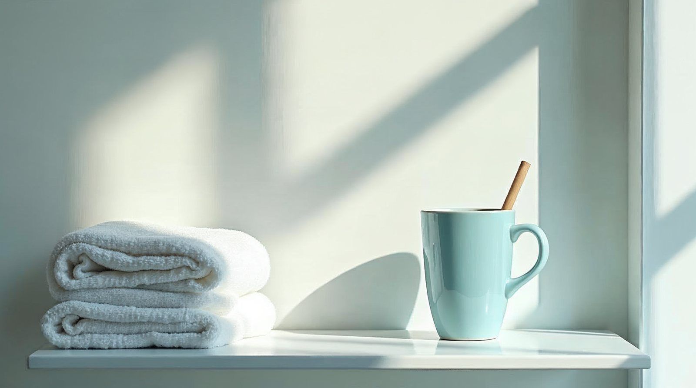
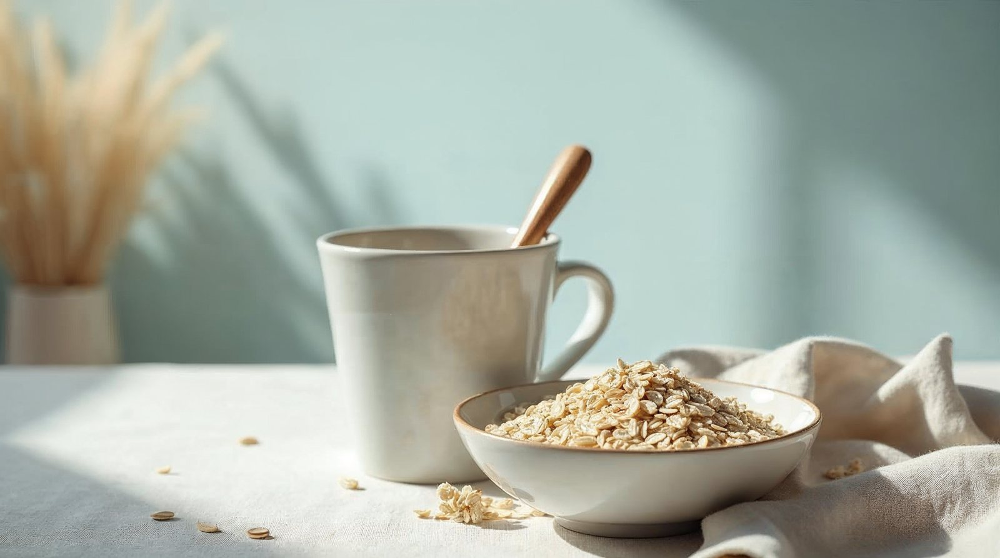
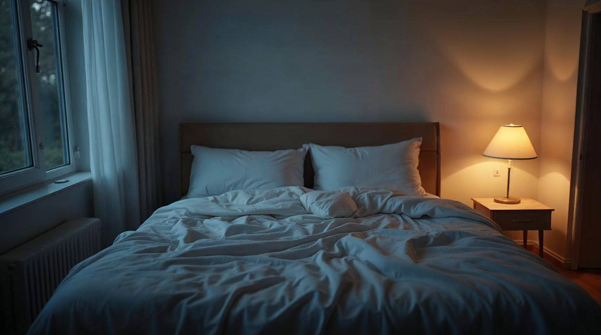
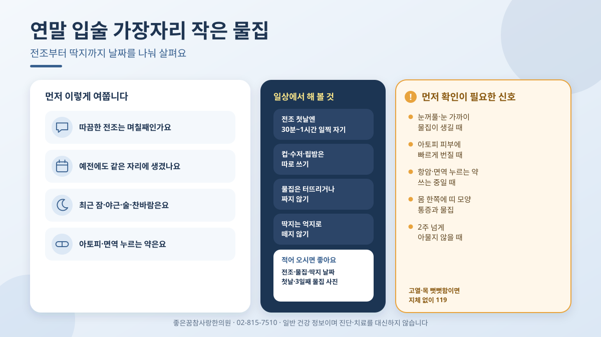

이종호 한의사 감수좋은꿈참사랑한의원 대표원장 (한의사 면허번호 19769)발행 2026-11-27 · 수정 2026-11-27
이 글의 차례
연말 마감과 송년회가 이어지고 잠이 줄던 어느 날, 입술 가장자리가 먼저 화끈하고 간질거리더니 하루 이틀 뒤 좁쌀 같은 작은 물집이 서너 개씩 모여 올라왔다면, 흔히 '입술 포진'이라 부르는 단순포진일 가능성이 커요.
대부분은 예전에 한 번 들어온 단순포진 바이러스가 신경 속에 머물러 있다가 다시 활동하면서 생겨요. 몸이 지치거나 잠이 부족할 때, 찬바람과 강한 햇빛, 감기와 열, 생리 전후처럼 몸의 방어력이 흔들리는 시기에 잘 올라오거든요.
그래서 저는 이 물집을 '몸이 보내는 쉬라는 신호'로 봐요. 물집은 입술에 생기지만, 이야기는 입술보다 그 전 며칠의 생활에 있는 경우가 많거든요.
보통은 물집이 터지고 딱지가 앉은 뒤 1~2주 사이에 가라앉아요. 다만 물집과 진물이 있는 동안은 다른 사람에게 옮길 수 있어서, 컵과 수저, 수건, 립밤을 따로 쓰고 손으로 만지지 않는 게 먼저예요.
따끔한 전조가 있을 때부터 약을 쓰고 싶거나 1년에 여러 번 되풀이된다면 피부과나 내과에서 먹는 약과 바르는 약을 상의해 보세요. 어떤 날 올라왔는지 계기를 적어 두면 한 해 동안 몸이 언제 지치는지 보여 주는 단서가 돼요. 눈 가까이에 물집이 생기거나 눈이 아프고 충혈되면 기다리지 말고 안과 진료를 먼저 받으세요.
왜 몸이 지치면 입술에 물집이 올라올까요
- 단순포진 바이러스는 한 번 몸에 들어오면 얼굴 쪽 신경의 뿌리에 조용히 머무는 경우가 많습니다. 어릴 때 가족이나 주변 사람에게서 모르는 사이 옮는 일이 흔해, 어른 가운데 상당수가 이 바이러스를 지니고 있다고 알려져 있습니다.
- 평소에는 몸의 방어력이 바이러스를 눌러 두지만, 잠이 줄고 과로가 겹치거나 스트레스가 클 때, 감기나 몸살로 열이 날 때 다시 활동하며 신경을 따라 입술 쪽으로 내려와 물집을 만듭니다.
- 겨울의 차고 건조한 바람은 입술을 트게 하고 작은 상처를 만들어 계기가 되기 쉽습니다. 스키장이나 눈길처럼 햇빛이 반사되는 곳에서는 자외선도 계기가 될 수 있습니다.
- 연말에는 늦은 회식과 술, 짧은 잠, 업무 압박이 몰려 몸이 쉬는 시간이 크게 줄어듭니다. 그래서 해마다 같은 시기에 올라온다는 분이 적지 않습니다.
- 생리 전후, 치과 치료로 입을 오래 벌리고 있었던 뒤, 입술을 자꾸 뜯거나 깨무는 습관도 계기가 될 수 있습니다.
- 한의학에서는 입과 입술을 비위(소화 기관)와 이어진 곳으로 보고, 과로와 늦은 식사로 비위에 열이 쌓이거나 몸의 진액이 마르면서 열이 위로 뜰 때 입술 주변에 열이 드러난다고 설명하기도 합니다.
먼저 이렇게 여쭙니다
- 물집이 올라오기 전에 따끔거림, 간질거림, 화끈거림 같은 전조가 있었는지, 그때부터 며칠째인지 여쭙니다.
- 처음 생긴 것인지, 예전에도 같은 자리에 생긴 적이 있는지, 1년에 몇 번쯤 되풀이되는지 여쭙니다.
- 올라오기 전 며칠 동안의 잠, 야근, 회식과 술, 감기 기운, 찬바람이나 햇빛 노출, 생리 시기를 여쭙니다.
- 물집이 입술 가장자리에만 있는지, 코 밑이나 뺨, 눈 주위, 입안까지 번졌는지 확인합니다.
- 열이 나거나 턱 밑 림프샘이 붓고 아픈지, 입안이 헐어 먹기 힘든지 여쭙니다.
- 아토피 피부염이 있는지, 스테로이드나 면역을 누르는 약을 쓰고 있는지, 임신 중인지 확인합니다.
- 이미 병원에서 받은 약이 있는지, 언제부터 바르거나 먹고 있는지 여쭙니다.
일상에서 먼저 해 볼 수 있는 것
따끔한 전조가 느껴진 첫날
- 입술 가장자리가 평소와 다르게 따끔하거나 간질거리면 그날을 기록해 둡니다. 예전에 처방받은 약이 있다면 언제 쓰기 시작하라고 들었는지 확인하고 그 안내를 따릅니다. 아직 받은 적이 없다면 다음 진료 때 전조가 있을 때의 사용법을 미리 물어 두면 좋습니다.
- 그날 저녁 약속이나 야근은 가능하면 줄이고, 평소보다 30분에서 1시간 일찍 잠자리에 듭니다.
- 손으로 자꾸 만지거나 립밤을 덧바르며 문지르지 않습니다.
물집과 진물이 있는 동안(대개 첫 3~5일)
- 컵, 수저, 빨대, 수건, 립밤, 립스틱을 따로 씁니다. 가족과 찌개를 함께 떠먹는 상차림이라면 앞접시와 국자를 씁니다.
- 입맞춤은 피하고, 특히 갓난아기나 아토피 피부염이 있는 사람, 항암 치료 중인 가족과는 가까운 얼굴 접촉을 피합니다.
- 물집을 터뜨리거나 짜지 않습니다. 진물이 묻은 손으로 눈을 비비거나 콘택트렌즈를 만지지 않도록, 만졌다면 바로 비누로 손을 씻습니다.
- 화끈거릴 때는 깨끗한 수건에 감싼 차가운 팩을 5~10분 대어 보면 조금 덜하다는 분이 많습니다.
- 마스크를 쓰면 찬바람과 마찰을 줄일 수 있지만, 안쪽이 축축해지면 자주 갈아 씁니다.
딱지가 앉은 뒤(대개 5~10일째)
- 딱지를 억지로 떼지 않습니다. 세수할 때 문지르지 말고 물로 가볍게 헹군 뒤 톡톡 두드려 말립니다.
- 입이 마르면 딱지가 갈라지기 쉬우니 물을 자주 마시고, 바셀린처럼 자극이 적은 보습제를 깨끗한 면봉으로 덜어 얇게 바릅니다.
- 맵고 짠 음식, 뜨거운 국물은 상처를 자극할 수 있어 미지근하게 식혀 먹습니다.
- 다 나은 뒤에는 물집이 있던 때 쓰던 립밤을 새것으로 바꿉니다.
다시 올라오지 않게 하는 생활
- 연말처럼 일정이 몰리는 시기에는 일주일 가운데 적어도 이틀은 일찍 귀가해 7시간 안팎 자는 날을 미리 정해 둡니다.
- 외출할 때 자외선 차단 성분이 있는 립밤을 바르고, 찬바람이 센 날은 목도리나 마스크로 입 주위를 가립니다.
- 입술을 뜯거나 혀로 핥는 버릇이 있다면 립밤을 손 닿는 곳에 두어 대신 바르는 습관으로 바꿉니다.
- 감기 기운이 돌면 무리해서 버티기보다 하루라도 일찍 쉬는 쪽을 택합니다.
- 술자리를 이틀 연속 잡지 않고, 늦은 야식 대신 따뜻한 물이나 보리차로 마무리합니다.

물집이 있는 동안 화장·면도·치과 진료는 어떻게 할까요
- 물집 위에는 립스틱이나 컨실러를 바르지 않는 편이 좋습니다. 꼭 가려야 한다면 일회용 면봉으로 덜어 쓰고, 그 기간에 쓴 제품은 다른 사람과 나누지 않습니다.
- 입 주변을 면도하는 분은 물집 자리를 피해 조심스럽게 밀고, 그 기간에 쓴 면도날은 따로 두었다가 다 나은 뒤 바꿉니다.
- 급하지 않은 치과 진료나 스케일링이 잡혀 있다면 물집이 있다는 것을 미리 알리고 날짜를 상의합니다. 입을 오래 벌리고 있으면 물집이 터지거나 번질 수 있습니다.
- 입술 주변에 레이저나 필러 같은 미용 시술을 받을 계획이라면, 예전에 포진이 자주 생겼다는 사실을 시술 전에 알려 둡니다.
- 수건은 매일 갈아 쓰고, 베갯잇도 평소보다 자주 빨아 줍니다.
입술 포진과 헷갈리기 쉬운 것들
- 찬바람에 입술이 트는 것은 입술 전체가 하얗게 일어나고 갈라지는 모습이 많고, 물집이 무리 지어 생기지는 않습니다.
- 입꼬리가 갈라지는 것은 양쪽 입꼬리가 하얗게 짓무르고 찢어지는 모습이 많습니다.
- 입안 볼 안쪽이나 혀에 하얗게 패인 궤양이 생기는 것은 구내염인 경우가 많고, 입술 바깥 피부에 생기는 포진과는 자리가 다릅니다.
- 노랗게 꿀 같은 딱지가 넓게 번지는 것은 세균 감염일 수 있어 피부과 진료가 필요합니다.
- 새 립스틱이나 립밤을 쓴 뒤 입술 전체가 붓고 가려운 것은 접촉 피부염일 수 있습니다. 헷갈리면 사진을 찍어 진료 때 보여 주세요.
상황별 예시
- 예를 들어 연말 결산으로 2주째 밤 12시가 넘어 퇴근하던 직장인이 아랫입술 한쪽이 화끈하더니 다음 날 작은 물집이 모여 올라온 경우, 그 주 회식을 한두 번 줄이고 일찍 자는 날을 만들며, 컵과 수건을 따로 씁니다. 예전에도 같은 자리에 되풀이되었다면 피부과에서 전조가 있을 때 쓸 약을 상의해 둡니다.
- 예를 들어 연말 휴가로 스키장에 다녀온 뒤 이틀 만에 윗입술에 물집이 생긴 경우, 눈에 반사된 강한 햇빛과 찬바람, 평소보다 짧은 잠이 겹쳤을 수 있습니다. 다음 여행에는 자외선 차단 립밤과 넥워머를 챙기고, 일정 사이에 쉬는 날을 넣어 봅니다.
- 예를 들어 생리 전마다 입술 가장자리에 물집이 올라오는 분이라면 생리 예정일을 달력에 표시해 두고, 그 전 주에는 늦은 약속과 술을 줄이며 잠을 먼저 챙깁니다. 되풀이되는 간격과 시기를 기록해 진료 때 보여 주세요.
- 예를 들어 아토피 피부염이 있는 분이 입술 물집이 뺨과 이마로 빠르게 번지고 열이 나는 경우에는 집에서 지켜보지 말고 바로 피부과나 응급실 진료를 받습니다.

자주 하는 오해
- 입술 물집을 단순히 '입술이 튼 것'으로 여기기 쉽지만, 포진은 한 자리에 작은 물집이 무리 지어 생기고 옮을 수 있다는 점이 다릅니다.
- 딱지가 앉으면 더는 옮지 않는다고 생각하기 쉽지만, 딱지가 완전히 떨어지고 피부가 아물 때까지는 조심하는 편이 좋습니다.
- 물집을 터뜨려 말리면 빨리 가라앉는다고 여기는 분도 있습니다. 터뜨리면 손과 주변으로 옮기기 쉽고 세균이 더해져 덧날 수 있습니다.
- 치약이나 알코올을 바르면 빨리 마른다는 말도 있지만, 자극이 커서 따가움과 붉어짐만 더할 수 있습니다.
- 한 번 생기면 앞으로 계속 자주 생긴다고 걱정하는 분도 있습니다. 사람마다 되풀이 정도가 크게 다르고, 계기를 알고 피하면 덜 올라오는 경우도 많습니다.
스스로 점검해 보세요
- 물집이 생기기 하루 이틀 전 같은 자리가 따끔하거나 간질거렸다.
- 1년에 두세 번 이상 비슷한 자리에 올라온다.
- 올라오기 전 일주일 동안 잠이 6시간보다 짧은 날이 많았다.
- 연말이나 시험, 마감처럼 바쁜 시기마다 생기는 편이다.
- 찬바람이나 강한 햇빛을 오래 쐰 뒤에 잘 생긴다.
- 컵, 수건, 립밤을 가족과 함께 쓰고 있다.
- 물집이 생겼을 때 손으로 자주 만지거나 딱지를 떼는 편이다.
한의원에서 함께 살필 수 있는 경우
- 바쁜 시기마다 입술 물집, 입안 헒, 혓바늘처럼 입 주변 불편이 번갈아 올라오는 경우
- 물집과 함께 잠이 얕고 피로가 풀리지 않으며, 입이 마르고 얼굴로 열이 오르는 느낌이 있는 경우
- 늦은 식사와 술로 속이 더부룩하고 변이 고르지 않은 시기에 잘 생기는 경우
- 병원 약은 받아 두었지만, 올라오는 계기가 되는 생활 리듬을 함께 정리하고 싶은 경우
좋은꿈참사랑한의원에서는 첫 방문 때 물집이 언제 처음 생겼는지, 1년에 몇 번 어떤 시기에 되풀이되는지, 올라오기 전 며칠의 잠과 일, 식사, 술을 먼저 여쭙니다. 그다음 맥부터 짚어 몸이 얼마나 지쳐 있는지와 열이 위로 뜨는 모습을 살피고, 혀와 배를 함께 보아 진액이 마른 정도와 비위의 상태를 확인합니다.
물집이 올라와 있는 동안 오신다면 마스크를 쓰고 오시고, 접수할 때 미리 말씀해 주세요. 물집 자체에 쓰는 약과 되풀이를 줄이는 약은 피부과나 내과에서 상의하시도록 안내하고, 한의원에서는 잠과 피로, 소화, 열감 같은 몸 전체의 리듬을 함께 살피며 필요하면 침이나 한약을 상의합니다.
다시 오시면 지난번 이후의 계기 기록을 이어서 보고, 다음 바쁜 시기를 어떻게 지낼지 함께 정합니다.

얼마나 지켜보고 언제 상담할까요
- 대개 물집이 생기고 딱지가 앉아 떨어지기까지 1~2주가 걸립니다. 이 기간에는 옮기지 않도록 조심하며 지켜봅니다.
- 2주가 지나도 아물지 않거나, 점점 커지고 범위가 넓어지면 피부과 진료를 받습니다.
- 1년에 여러 번 되풀이되거나, 올라올 때마다 일상이 힘들 만큼 아프다면 미리 쓸 약과 계기 관리를 상의해 보세요.
- 처음 생겼는데 열과 함께 입안 전체가 헐어 먹고 마시기 힘들다면 바로 진료를 받습니다.
이렇게 기록해 오시면 상담이 쉬워집니다
물집은 며칠 지나면 가라앉으니, 지나고 나면 언제였는지 잊기 쉬워요. 그런데 한 해에 두세 번만 기록이 쌓여도 몸이 어느 시기에 지치는지가 보이거든요. 아래 것들을 적어 오시면 상담이 쉬워져요.
- 따끔한 전조가 시작된 날, 물집이 생긴 날, 딱지가 떨어진 날
- 물집 사진(첫날, 3일째, 딱지 앉은 날)
- 올라오기 전 일주일의 수면 시간, 야근과 회식, 술
- 감기, 열, 생리, 치과 치료, 스키나 등산 같은 계기
- 1년 동안 되풀이된 횟수와 자리
- 쓰고 있는 약(먹는 약, 바르는 약)과 아토피 같은 피부 질환 여부
사진은 같은 조명에서 찍어 두시면 좋아요. 물집이 얼마나 빨리 딱지로 넘어가는지가 한눈에 보이고, 다음에 올라왔을 때 견주어 보기도 쉬워요.
몸을 살피는 건 제가 맡을게요. 대신 하나만 부탁드려요. 입술이 따끔해지는 날엔 그날 밤만큼은 일찍 잠자리에 드세요. 그거 하나예요. 잠이 보약이거든요. 딴 건 하시던 대로 편하게 하셔도 돼요.
물집이 올라왔다고 스스로를 탓하지 않으셔도 돼요. 그만큼 애쓰셨다는 뜻이니까요. 궁금한 건 오셔서 그냥 편하게 물어보세요.
이런 증상은 먼저 확인이 필요합니다
- 물집이 눈꺼풀이나 눈 가까이에 생겼거나, 눈이 아프고 충혈되며 빛에 눈이 부시거나 흐려 보이는 경우
- 아토피 피부염이 있는 피부에 물집이 빠르게 번지거나 열이 나는 경우
이런 신호가 있으면 한의원보다 가까운 병원이나 응급실을 먼저 찾으세요.
관련 글
- 잠이 부족하면 피부가 푸석하고 트러블이 나는 이유는 무엇인가요?
- 겨울 찬바람을 맞고 들어오면 볼이 빨갛게 달아오르고 따가울 때는 어떻게 살피나요?
- 증상 사진이나 영상을 찍어 가면 도움이 되나요?

여쭙는 것
- 물집이 올라오기 전에 따끔거림, 간질거림, 화끈거림 같은 전조가 있었는지, 그때부터…
- 처음 생긴 것인지, 예전에도 같은 자리에 생긴 적이 있는지, 1년에 몇 번쯤 되풀이…
- 올라오기 전 며칠 동안의 잠, 야근, 회식과 술, 감기 기운, 찬바람이나 햇빛 노출…
생활에서 해 볼 것
- 입술 가장자리가 평소와 다르게 따끔하거나 간질거리면 그날을 기록해 둡니다. 예전에…
- 그날 저녁 약속이나 야근은 가능하면 줄이고, 평소보다 30분에서 1시간 일찍 잠자리…
- 손으로 자꾸 만지거나 립밤을 덧바르며 문지르지 않습니다.
한의원에서 함께 살필 것
- 바쁜 시기마다 입술 물집, 입안 헒, 혓바늘처럼 입 주변 불편이 번갈아 올라오는 경우
- 물집과 함께 잠이 얕고 피로가 풀리지 않으며, 입이 마르고 얼굴로 열이 오르는 느낌…
- 늦은 식사와 술로 속이 더부룩하고 변이 고르지 않은 시기에 잘 생기는 경우
먼저 확인이 필요한 신호
- 물집이 눈꺼풀이나 눈 가까이에 생겼거나, 눈이 아프고 충혈되며 빛에 눈이 부시거나…
- 아토피 피부염이 있는 피부에 물집이 빠르게 번지거나 열이 나는 경우
한눈에 보는 표
| 구분 | 핵심 |
|---|---|
| 여쭙는 것 | 물집이 올라오기 전에 따끔거림, 간질거림, 화끈거림 같은 전조가 있었는지, 그때부터 며칠째인지 여쭙니다. 처음 생긴 것인지, 예전에도 같은 자리에 생긴 적이 있는지, 1년에 몇 번쯤 되풀이되는지 여쭙니다. |
| 생활에서 해 볼 것 | 입술 가장자리가 평소와 다르게 따끔하거나 간질거리면 그날을 기록해 둡니다. 예전에 처방받은 약이 있다면 언제 쓰기 시작하라고 들었는지 확인하고 그 안내를 따릅니다. 아직 받은 적이 없다면 다음 진료 때 전조가 있을 때의 사용법을 미리 물어 두면 좋습니다. 그날 저녁 약속이나 야근은 가능하면 줄이고, 평소보다 30분에서 1시간 일찍 잠자리에 듭니다. |
| 한의원에서 함께 살필 것 | 바쁜 시기마다 입술 물집, 입안 헒, 혓바늘처럼 입 주변 불편이 번갈아 올라오는 경우 물집과 함께 잠이 얕고 피로가 풀리지 않으며, 입이 마르고 얼굴로 열이 오르는 느낌이 있는 경우 |
| 먼저 확인이 필요한 신호 | 물집이 눈꺼풀이나 눈 가까이에 생겼거나, 눈이 아프고 충혈되며 빛에 눈이 부시거나 흐려 보이는 경우 아토피 피부염이 있는 피부에 물집이 빠르게 번지거나 열이 나는 경우 |
자주 묻는 질문
입술 물집이 생겼는데 출근이나 모임에 가도 되나요?
일상생활은 대개 그대로 하셔도 됩니다. 다만 물집과 진물이 있는 동안은 컵과 수저를 따로 쓰고, 입맞춤과 가까운 얼굴 접촉을 피하며, 만진 뒤에는 손을 씻어 주세요.
입술 포진은 약을 꼭 써야 하나요?
대부분은 1~2주 사이 저절로 가라앉습니다. 다만 자주 되풀이되거나 통증이 심하면 피부과나 내과에서 먹는 약과 바르는 약을 상의해 보세요. 전조가 있을 때 일찍 쓰는 편이 도움이 될 수 있어 미리 물어 두면 좋습니다.
입꼬리가 찢어진 것과는 어떻게 다른가요?
입꼬리가 갈라지는 것은 양쪽 입꼬리가 하얗게 짓무르고 찢어지는 모습이 많고, 입술 포진은 입술 가장자리 한 자리에 작은 물집이 모여 생긴 뒤 딱지가 앉는 모습이 많습니다. 헷갈리면 사진을 찍어 진료 때 보여 주세요.
물집이 있을 때 한의원 진료를 받아도 되나요?
받으실 수 있습니다. 마스크를 쓰고 오시고, 접수할 때 입술에 물집이 있다고 미리 말씀해 주세요. 물집 자체에 쓰는 약은 피부과나 내과 처방을 따르고, 한의원에서는 잠과 피로, 소화 같은 몸 전체의 리듬을 함께 살핍니다.
해마다 연말에 생기는데 미리 할 수 있는 것이 있나요?
연말 일정을 짤 때 일찍 자는 날을 먼저 정해 두고, 술자리를 연달아 잡지 않으며, 찬바람과 햇빛으로부터 입술을 가려 주세요. 지난해 언제 올라왔는지 기록이 있다면 그 시기 앞뒤로 더 쉬어 가는 것이 좋습니다.
좋은꿈참사랑한의원은 재진 때 지난번 이야기부터 이어서 여쭙니다. 진료시간과 예약은 오시는 길에서 확인하세요.
어디서 상담받을 수 있나요?
좋은꿈참사랑한의원은 서울 동작구 만양로2길 2 신성빌딩 3층·5층(서울 동작구 상도동, 7호선 상도역 3번 출구 근처)에 있습니다. 한의사 3명(이종호 대표원장, 조영기 수석진료원장, 정원영 진료원장)이 진료합니다. 진료시간은 평일 09:30~20:00(점심 13:00~14:00), 토·일·공휴일 09:30~15:00이며, 방문 전 전화로 확인을 권합니다. 예약은 네이버 예약, 카카오톡 상담, 전화 02-815-7510로 받습니다.
이 글은 일반적인 건강 정보이며 개인의 진단이나 치료를 대신하지 않습니다. 증상이 있거나 복용 중인 약이 있다면 진료를 통해 확인하세요. 치료 효과는 개인마다 다를 수 있습니다.
작성 기준: 일반적으로 알려져 있는 건강 정보를 참고해 정리했습니다(대표원장 감수). 증상 기록은 1~2주 동안 하루 1회, 비슷한 시간에 적어 오시면 지난 상태와 비교하기 쉽습니다.